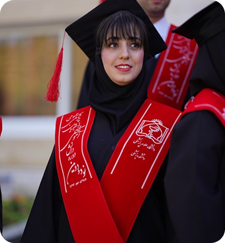

أعلى نتيجة (دفعة 2024)
44/45 – عائشة ك.
نرعى التعلم مدى الحياة، مستندين إلى القيم والانفتاح والمواطنة العالمية الشجاعة.
نحتفل بالتميز الأكاديمي والأنشطة اللاصفية.
أعلى نتيجة (دفعة 2024)
نرعى التعلم مدى الحياة، مستندين إلى القيم والانفتاح والمواطنة العالمية الشجاعة.
منح دراسية في 2024
تحدي الروبوتات الوطني في الإمارات 2024
منح دراسية في 2024

بطولة المناظرة الدولية
فائزون في مسابقات البرمجة والرياضيات على مستوى المنطقة
طلاب شاركوا في معرض الفنانين الشباب في الإمارات
رياضيون على المستوى الوطني في السباحة وكرة القدم وألعاب القوى
ساعات تطوعية أنجزها طلاب المرحلة الثانوية